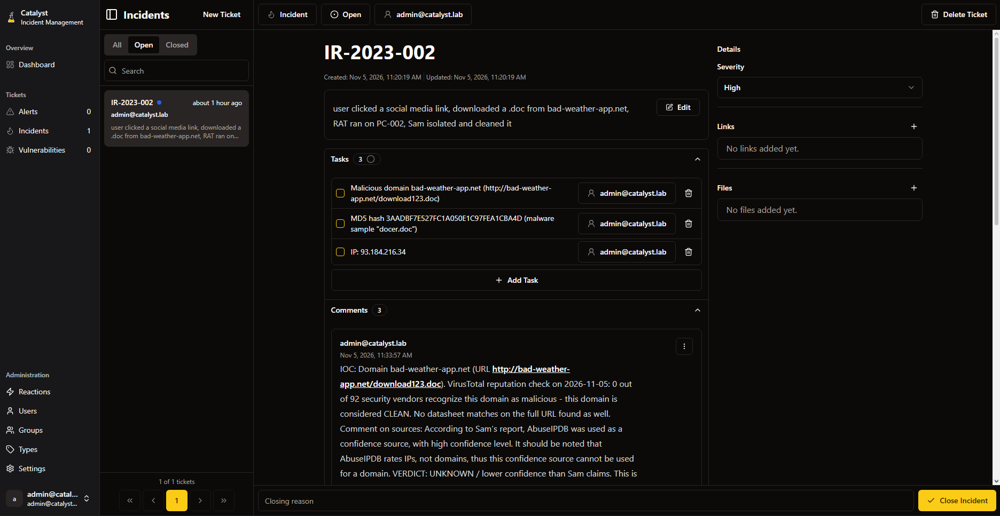

In the CodePath CYB102 Incident Response lab, I played the relay analyst on PathCode's CSIRT. A first responder, Sam Johnson, had already handled a malware incident and filed a short report. My job was to pick the case up in Catalyst, check every indicator myself, find what the report missed, and write the analysis that turns first-responder notes into a real post-incident record.
The incident
On May 7, 2023, user Jordan Anderson clicked a link in a social media post that looked
like a news article. It led to a malicious domain, a Word document downloaded, and a
Remote Access Trojan (RAT) ran on PC-002. Sam isolated the machine at
16:15 UTC, backed it up, removed the malware, and returned it to the user by 17:30.
Sam's report listed three indicators, all rated high confidence.
| Indicator | Value | Sam's source |
|---|---|---|
| MD5 hash | 3AADBF7E527FC1A050E1C97FEA1CBA4D | Antivirus |
| IP | 93.184.216[.]34 | VirusTotal |
| URL | hxxp[:]//bad-weather-app[.]net/download123.doc | AbuseIPDB |
Documenting the case
I opened the incident in Catalyst as IR-2023-002, set severity to High,
added a task for each indicator, and left a comment on each one with what the lookup
tools reported and my verdict.

IR-2023-002 in Catalyst, one task per indicator with lookup comments underneath.
Triage
Severity: High. A RAT gives an outside attacker hands-on control of
PC-002, so the risk reaches anything Jordan's account could touch while it
ran. VirusTotal backed that up by identifying the file as a W97M macro dropper built to
pull down a second stage. I stopped short of Critical because the known scope is one
endpoint with no evidence yet of lateral movement or exfiltration.
TLP: AMBER. The record names a specific user and host and still has open questions about what the attacker did, so it shouldn't be public. The hash is still worth sharing with IT, the SOC and trusted partners for blocking, which RED wouldn't allow.
IOC research
| Indicator | What the tools said | Verdict |
|---|---|---|
MD5 hash (docer.doc) | VirusTotal: 48/63 vendors, trojan.valyria/w97m, obfuscated auto-open VBA macros, dropper and downloader behavior | Malicious |
93.184.216[.]34 | VirusTotal: 2/92 vendors, TLS cert for www.example.org. AbuseIPDB: 0% confidence, no reports in 60 days | Weak signal |
bad-weather-app[.]net | VirusTotal: 0/92 vendors, no match on the full URL | Unknown |
Gap analysis
The report never says what the RAT did before isolation at 16:15. There's no confirmed C2 address, no persistence check, and no mention of resetting Jordan's credentials. With a RAT that gap matters most, because the attacker could have harvested passwords or reached other systems in that window. The incident can't be called closed until someone answers those questions.
Detection gap
Kill chain: link → resolve → download → execute. The
domain came back clean, so DNS reputation filtering wouldn't have stopped the link. The
file, though, is flagged by 48 vendors. A secure web gateway that scans Office
downloads against AV signatures or detonates them in a sandbox would have stopped
docer.doc before it ever reached PC-002.
Recommendation
A second layer at the execute step: enforce the Group Policy "Block macros from running in Office files from the Internet" and enable the Defender Attack Surface Reduction rule "Block all Office applications from creating child processes." Downloaded files carry the Mark of the Web, so Office won't run their macros, and even if one does run, Word can't spawn the PowerShell or cmd process the dropper needs to fetch the RAT. If a malicious document slips past the gateway, it still can't run its payload.
Classification: True Positive. The file is a confirmed malicious dropper and the user confirmed opening it. The weak IP and clean domain lower confidence in the infrastructure indicators, not in the fact that malware ran.
Arguing the other side
The strongest case against my call is that this should be Medium. What's confirmed is
a macro dropper. The RAT itself rests on Sam's report, the IP is shared hosting, and
nobody documented C2 traffic from PC-002. It's possible the macro ran and
the second stage never landed. Proxy or EDR logs from that window would settle it: if
WINWORD.EXE spawned a child process that reached an attacker IP, High
stands. If not, the infection likely stalled at the dropper.
Tools used
- Catalyst (incident tickets, tasks, comments) in Docker
- VirusTotal for file, IP and domain reputation
- AbuseIPDB for IP abuse history
Key takeaway
A second analyst is only as useful as their willingness to recheck the first one's work. Every indicator in this report was labeled high confidence, and only one held up. The relay analyst's real value is separating what's proven from what's assumed, and writing down what's still open so the next person knows where the risk is.